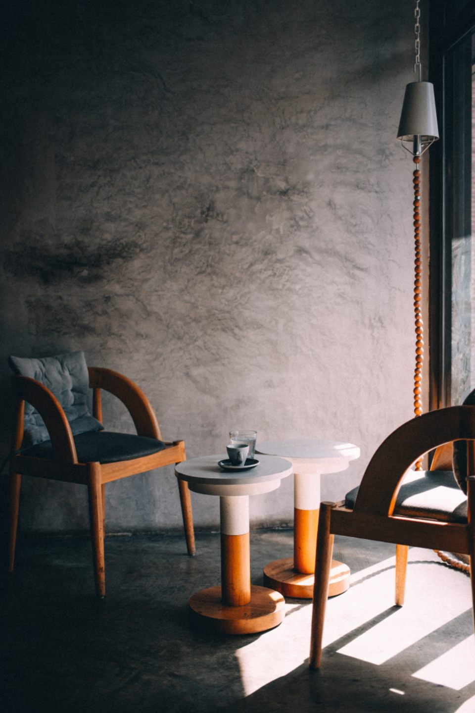
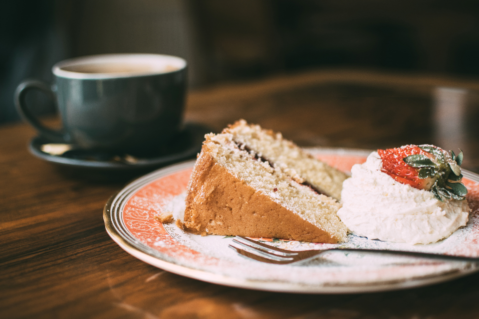
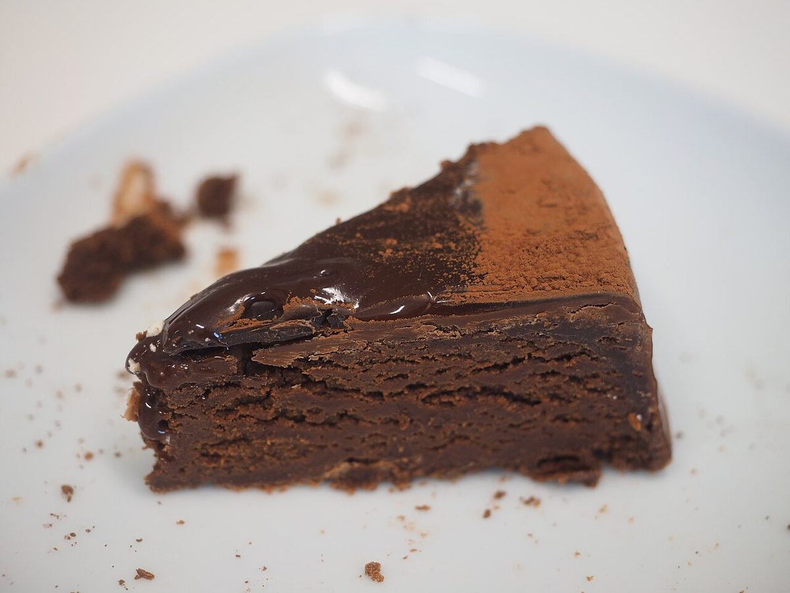
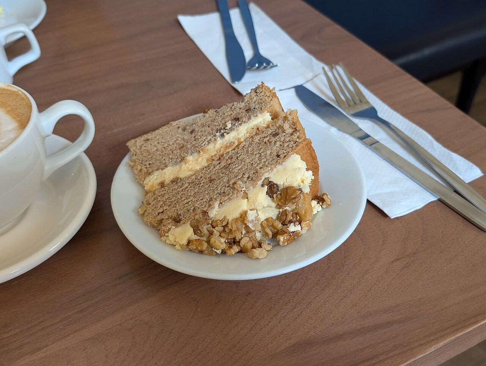
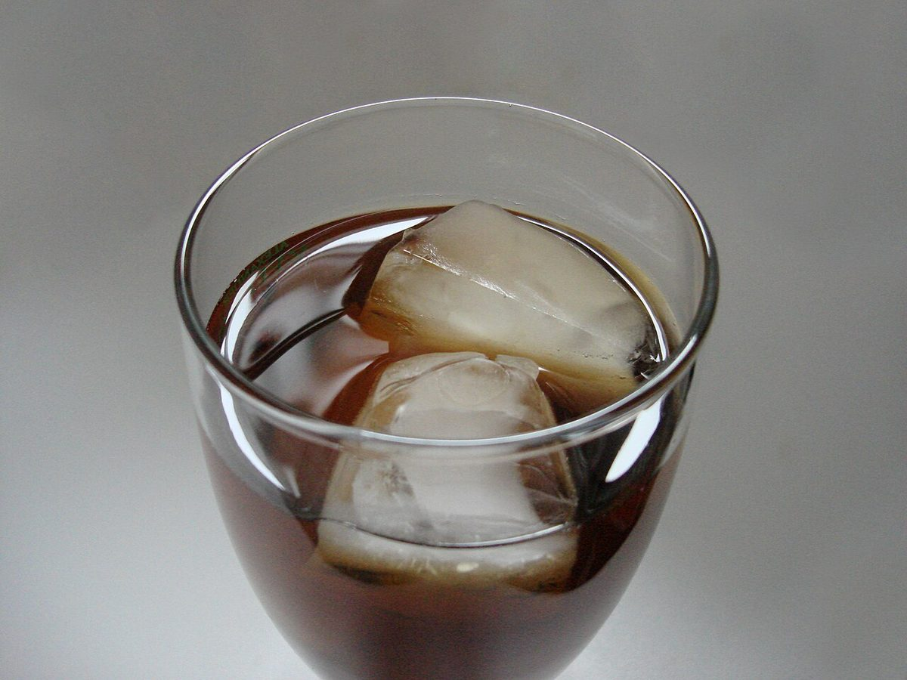

About納屋のひなたで、ケーキを一切れ
三豊市豊中町にある「aurinko(アウリンコ)」は、納屋をリノベーションしたケーキ店併設のカフェです(紹介記事より)。ずっしりと食べ応えがあり、一切れでも満足できるケーキが中心で、甘さは素材の味が引き立つよう控えめ、と紹介されています。
店名の「aurinko」はフィンランド語で「太陽」を意味する言葉です。お店がこの意味を込めて名付けたかどうかは確認できていないため、このページの「ひなた」というイメージは制作側のものです。
営業時間・定休日は情報源により異なり、不定休とされています。お出かけ前にInstagramでご確認ください。

Menuケーキとドリンク
ケーキは種類が多く、入れ替わりがあると紹介されています。チーズケーキの種類が豊富との記事もありました。以下の写真はすべてイメージで、実際の商品ではありません。







| ケーキ | チーズケーキ、チョコレートケーキなど(日替わり・入れ替わり)。詳細・価格は準備中 |
|---|---|
| ドリンク | コーヒー、カフェオレ、紅茶など。詳細・価格は準備中 |
| ホール予約 | 準備中 |
Voice口コミ(イメージ例)
以下は制作側が作成した「イメージ例」で、実在のお客様の声ではありません。
イメージ例
ゆったりした空間で、ケーキをゆっくり味わえそうです。今度の休日に寄ってみたいです。
イメージ例
一切れでしっかり満足できるケーキがあると聞いて、気になっています。ドリンクと一緒に楽しみたいです。
イメージ例
営業日はInstagramで確認できるようなので、更新をチェックして出かけてみたいです。